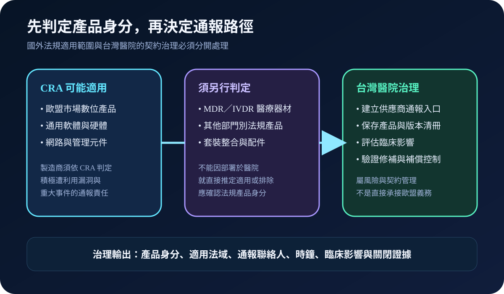
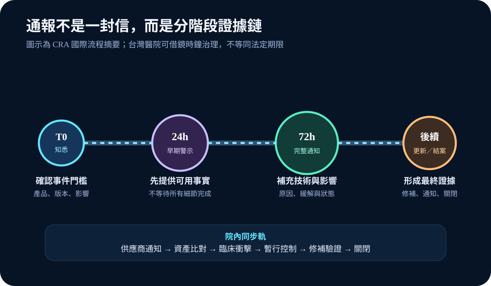
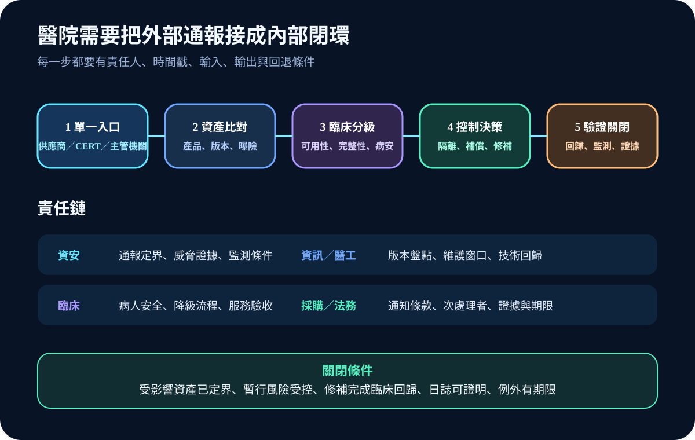

醫療資安國際觀察 · 2026-10-05
醫療數位產品漏洞通報如何不漏接：從 CRA 單一入口到院內供應商證據
作者：Dr. William｜醫療資訊與資安治理實務工作者
漏洞通報的風險不只在於供應商是否寄出通知，更在於醫院能否在時限內確認受影響產品、臨床依賴、暫行控制與修補結果。歐盟單一通報平台提供分階段通報模式，但醫院仍需建立自己的接收、分級與關閉證據鏈。
名詞解釋：CRA、積極遭利用漏洞與單一通報平台
Cyber Resilience Act（CRA）是歐盟針對具數位元素產品的資安規則。積極遭利用漏洞是已有可靠證據顯示惡意行為者正在利用的弱點。Single Reporting Platform（SRP）由 ENISA 建置，讓製造商依 CRA 提交早期警示、通知、更新與最終報告。平台不是醫院的資產清冊，也不會替醫院完成臨床影響判定。
國際現況與適用邊界
歐盟委員會與 ENISA 於 2026 年 9 月啟用 CRA 單一通報平台，相關強制通報義務自 2026 年 9 月 11 日開始適用。製造商知悉積極遭利用漏洞或影響產品安全的重大事件後，流程包含 24 小時早期警示、72 小時補充通知及後續報告。ENISA 於 2026 年 10 月 1 日更新平台詞彙表，明確整理通知種類、角色與狀態。
CRA 的適用對象是歐盟市場中的特定數位產品；受歐盟醫療器材或體外診斷醫療器材法規涵蓋的產品具有部門別適用邊界。醫院使用的通用軟體、網路設備、管理平台、整合元件或周邊產品仍須逐項確認。這些是歐盟法域要求，不是台灣醫療機構的法定通報期限。
台灣適用原則：可把國際分階段時鐘轉成契約與內控要求，但通報對象、法定期限及個資或醫療事件處理，仍須依台灣法規、主管機關要求與院內事件分級辦理。

規劃：把供應商通知接到臨床服務
範圍應涵蓋設備、軟體、雲端服務、整合閘道、網路與安全管理元件，並連結產品型號、版本、部署位置、臨床服務、資料類型、維護商及通知聯絡人。角色至少包含資安、資訊、醫工、臨床、採購、法務與事件指揮。驗收指標可採通知到定界時間、受影響資產確認率、逾時未回覆供應商數、暫行控制完成率、修補回歸成功率與逾期例外數。
實作：五步形成可追蹤閉環
- 單一入口：將供應商、CERT、主管機關與監測服務通知匯入同一案件編號。
- 資產比對：確認產品、版本、曝險、安裝位置、管理路徑及臨床依賴。
- 臨床分級：同時評估機密性、完整性、可用性、病人安全與停機替代方案。
- 控制決策：依風險採隔離、限制存取、監測、停用功能、供應商修補或受控退場。
- 驗證關閉：保留修補包來源、測試結果、臨床回歸、日誌證據、例外期限及重新開案條件。

風險：平台通知不等於院內風險已受控
常見失敗包括產品名稱與資產清冊無法對應、供應商只通知採購窗口、醫療器材與通用 IT 的法規身分混淆、24 小時時鐘啟動點無紀錄、緊急修補未做臨床回歸，以及案件在收到修補檔後直接關閉。契約應要求可機讀的產品識別、受影響版本、利用狀態、緩解方式、修補時程、次處理者通知與證據提供；無法立即修補者須保留補償控制、責任人、期限與風險接受。
可執行清單
- 每項數位產品是否有法規身分、版本、部署位置與臨床服務對照？
- 供應商是否能在指定入口提供受影響版本、利用狀態、緩解與修補時程？
- 通知到達後是否自動建立案件、時間戳、責任人與升級門檻？
- 技術風險是否與病人安全、停機替代及資料影響一起分級？
- 緊急修補是否先隔離測試，再分批部署並完成臨床回歸？
- 案件關閉是否包含日誌、測試、例外與供應商最終報告？
來源
- European Commission｜Cyber Resilience Act reporting obligations（更新：2026-09-11；查閱：2026-10-05）
- ENISA｜Single Reporting Platform（發布：2026-09-11；查閱：2026-10-05）
- ENISA｜CRA SRP Glossary v1.4（更新：2026-10-01；查閱：2026-10-05）
- EUR-Lex｜Regulation (EU) 2024/2847（發布：2024-11-20；查閱：2026-10-05）
內容說明
本文依健康台灣深耕計畫相關治理內容整理，並參考歐盟委員會、ENISA 與 EUR-Lex 公開資料，提出數位產品通報、醫療適用邊界、供應商入口與關閉證據框架；不把歐盟法規視為台灣法定義務，也不取代主管機關公告、法律意見、院內政策、醫療器材要求或個案病人安全評估。